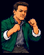
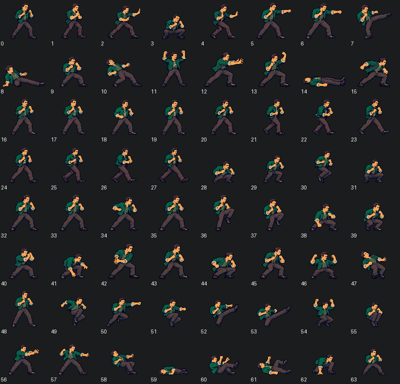
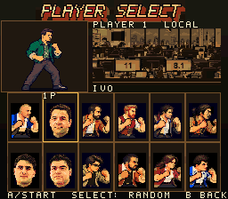
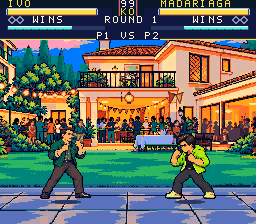
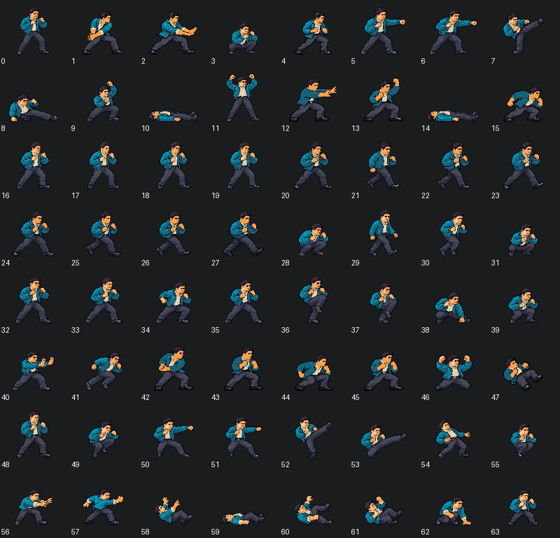
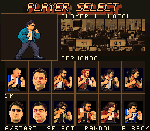
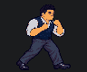
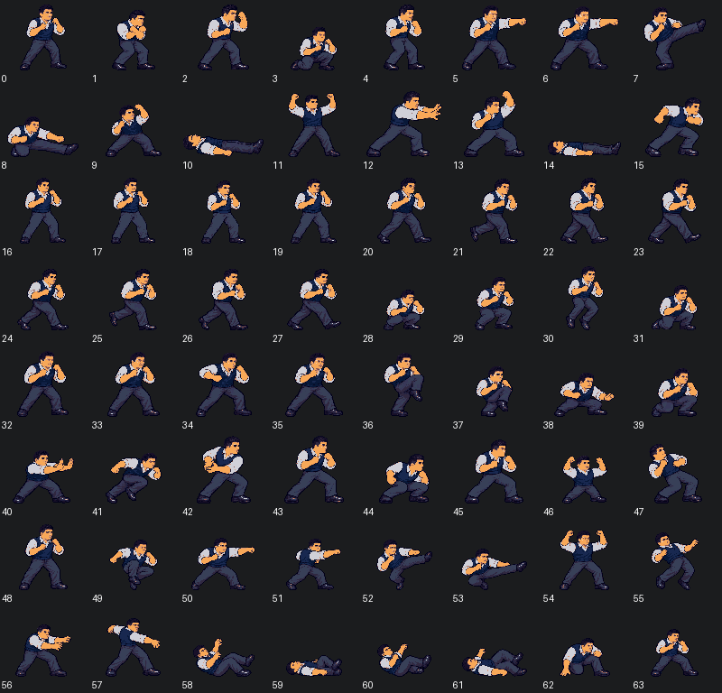
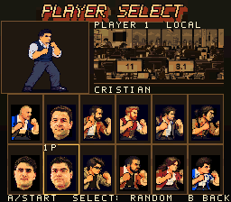

Ivo


All poses and actual gameplay



The approved photographic direction across Ivo, Fernando and Cristian's animations. Portraits and walking frames below are actual native pixels. GIF timing is an inspection aid.










